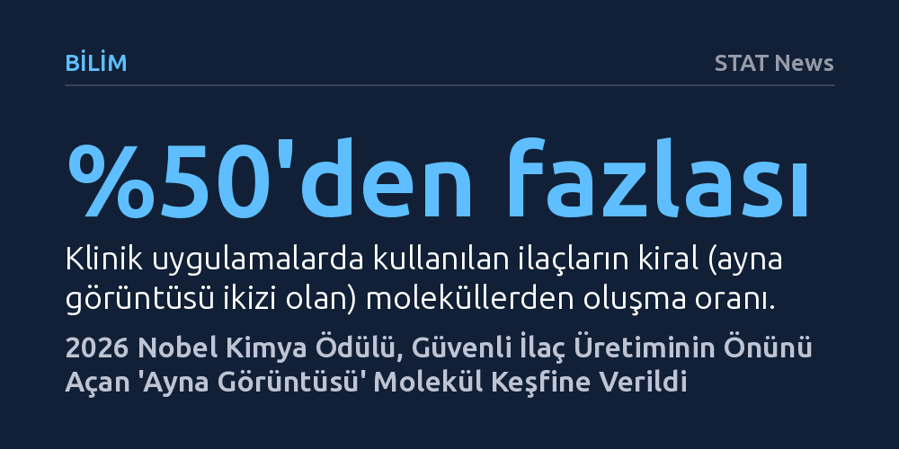

BILIM · STAT News · 2026-10-07
2026 Nobel Kimya Ödülü, 'ayna görüntüsü' moleküllerin kontrolünü keşfederek daha güvenli ve etkili ilaçların üretilmesini sağlayan Henri Kagan ve Kenso Soai'ye verildi. Araştırmacılar, canlılarda ve ilaçlarda kritik rol oynayan kiral moleküllerin dengesizliğini yönetmeyi başardı.
Kullandığımız ilaçların güvenliği ve etkisi, birbirinin ayna görüntüsü olan molekül ikizlerinden hangisinin üretildiğine ve bu kimyasal dengenin nasıl kontrol edildiğine bağlıdır.

2026 Nobel Kimya Ödülü, moleküler simetriyi kontrol etme yöntemlerini keşfeden Fransız kimyager Henri B. Kagan (95) ile Japon bilim insanı Kenso Soai'ye (76) verildi. İki araştırmacı, kimya dünyasında uzun süredir aşılması güç bir engel olarak görülen "ayna görüntüsü" moleküllerin manipülasyonunu çözerek daha güvenli ve hedefe yönelik ilaçların geliştirilmesine zemin hazırladı.
Yunancada "el" anlamına gelen kiralite kavramı, tıpkı sağ ve sol ellerimiz gibi birbirinin birebir ayna görüntüsü olan fakat üst üste çakışmayan molekülleri tanımlar. Proteinlerin temel yapı taşı olan amino asitler de kiral moleküller arasındadır ve canlı organizmalar bu formlardan kural olarak yalnızca birini bünyesinde barındırır. Canlı doğada diğer ayna kopyaya neredeyse hiç rastlanmazken, laboratuvar ortamında bu asimetrinin nasıl kurulduğu kimyagerler için hayati bir araştırma konusu olmuştur.
Nobel Komitesi, kiral moleküllerin durumunu kilit ve anahtar metaforuyla özetliyor: Bir kilidi açacak anahtarın kopyalarını üretmeye çalıştığınızda, kopyalama sürecinin hem doğru anahtarı hem de onun ayna görüntüsünü aynı anda ürettiğini düşünün. Birbirinden ayırt edilmesi son derece zor olan bu iki kopyadan yanlış olanını kilide sokma riski daima mevcuttur.
Bu durum bir ilaç geliştirme sürecinde yaşandığında riskler çok daha ciddileşir, çünkü klinikte kullanılan ilaçların yarıdan fazlası kiral moleküllerden oluşur. İlacın hedeflenen formunun ayna kopyası vücutta bambaşka bir tepki verebilir. Örneğin öksürük ilacı olan novrad ile ağrı kesici darvon, birbirinin tıpatıp ayna görüntüsü olan moleküllerdir ve isimleri dahi birbirinin tersten okunuşudur. Kimi durumlarda ise istenmeyen ayna molekül basit bir işlev farkının ötesine geçip ağır yan etkilere neden olabilir.
Kagan ve Soai'nin buluşlarından önce ilaçlar, her iki ayna molekülün eşit karışımından oluşan ve "rasemat" adı verilen formlarda piyasaya sürülmek zorundaydı. Kimyagerler bir molekülü, onun ayna ikizini de eşit oranda üretmeden sentezlemenin bir yolunu bulamamıştı ve istenmeyen kopyayı karışımdan ayıklamak imkânsıza yakındı.
İki bilim insanının geliştirdiği kimyasal reaksiyon mekanizmaları, moleküler süreçte asimetriyi tetikleyerek istenen tekil ayna formunun çoğalmasını sağladı. Nobel Kimya Komitesi üyesi Peter Somfai, Soai reaksiyonuna atıfta bulunarak, “Bu muhtemelen organik kimyadaki en havalı deneydir,” ifadesini kullandı. Bu keşif sayesinde artık istenmeyen ayna kopyalardan arındırılmış, saf kiral ilaçlar üretilerek tedavi etkinliği artırılırken yan etkiler en aza indirilebiliyor.
1901 yılından bu yana verilen Nobel Kimya Ödülü'nü bugüne dek 202 bilim insanı kazandı. Frederick Sanger ve Barry Sharpless bu ödülü ikişer kez aldıkları için ödüllendirilen tekil kişi sayısı 200 oldu. Ödül sahipleri arasında bugüne kadar sadece 8 kadın yer aldı. Kimya ödülünü kazanan en genç araştırmacı 35, en yaşlısı ise 97 yaşındaydı; 95 yaşındaki Henri Kagan bu alandaki en yaşlı sahiplerden biri oldu.
Toplamda 118 kez takdim edilen ödül; 63 kez tek bir kişiye verilirken, 26 kez iki kişi, 29 kez de üç kişi arasında paylaştırıldı. Kagan ve Soai, prestijli ödülle birlikte yaklaşık 1,2 milyon dolara karşılık gelen 12 milyon İsveç Kronu tutarındaki para ödülünü bölüşecek.